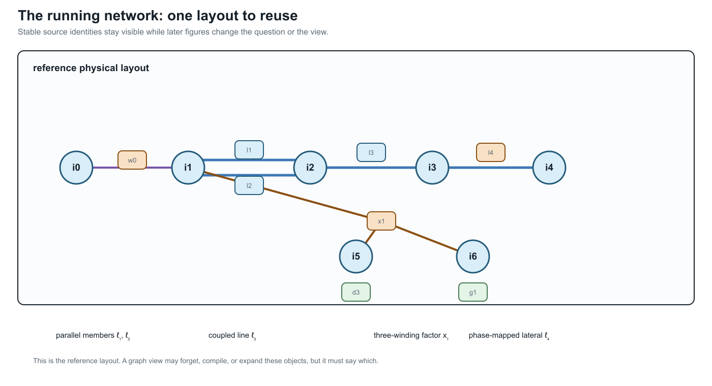

The running multiconductor network
Page status: semantic specification; numerical realization is versioned separately.
The book uses one synthetic reference network to compare representations and transformations. The network is deliberately small enough to draw and solve repeatedly, but it contains the features that disappear in a conventional balanced bus–branch diagram.
This page is the semantic specification. Its first numerical realization is the executable running network, version 0.1.0. The semantic contract remains authoritative where that fixture explicitly lists an unimplemented feature.
The layout below is the reference drawing for the rest of the book. Later figures should be read as views or overlays of this same source object set, not as unrelated replacement networks.

Design requirements
The running network must contain:
- ordered, nonuniform bus terminal sets;
- a four-conductor line with full mutual coupling;
- an explicit neutral and impedance grounding;
- a conductor permutation or phase discontinuity;
- heterogeneous parallel branches with distinct limits and states;
- an ideal switch represented as an object rather than merged buses;
- a genuinely multiwinding transformer;
- at least one continuous control and one discrete decision;
- measurements and operational limits;
- stable source identities and provenance for every generated object.
Source objects
The provisional bus set is
\[\mathcal B^{\mathrm R} =\{i_0,i_1,i_2,i_3,i_4,i_5,i_6\}.\]
The superscript $\mathrm R$ denotes the running case, not an electrical quantity. Bus terminal vectors are:
| Bus | Ordered terminals | Role |
|---|---|---|
| $i_0$ | $[a,b,c,n]$ | source-side substation bus |
| $i_1$ | $[a,b,c,n]$ | switched feeder head and transformer primary |
| $i_2$ | $[a,b,c,n]$ | grounded junction and parallel-corridor receiving bus |
| $i_3$ | $[a,b,c,n]$ | downstream four-wire bus |
| $i_4$ | $[a,c,n]$ | phase-discontinuous lateral bus |
| $i_5$ | $[a,b,c,n]$ | secondary winding bus |
| $i_6$ | $[a,b,c]$ | delta tertiary winding bus |
These labels are stable source identifiers. A compiled view may create virtual buses but must not reuse or renumber these identities without a reversible map.
Two-terminal topology
The declared forward topology includes
\[w_0i_0i_1\in\mathcal T^{W\rightarrow},\]
where $w_0$ is an ideal switch, and
\[\ell_1i_1i_2,\ \ell_2i_1i_2,\ \ell_3i_2i_3,\ \ell_4i_3i_4 \in\mathcal T^{L\rightarrow}.\]
Lines $\ell_1$ and $\ell_2$ are a heterogeneous parallel pair. They have distinct full impedance matrices, conductor ratings, construction records, outage states, and candidate investment decisions. An aggregated admittance may be a valid terminal-behaviour view while being invalid for the decision problem.
The generated line-identity witness makes the graph consequence explicit. In the scalar line projection of this multiconductor fixture, the four lines have one cycle-space dimension: the chord is $\ell_2$ against the declared tree $\{\ell_1,\ell_3,\ell_4\}$, so the cycle is the two-member parallel fibre. Collapsing unordered bus pairs to a simple graph gives cycle rank zero. The switch and the three-winding transformer are deliberately excluded from this line-only calculation; their terminal and factor incidences belong to the port–factor view rather than being silently treated as scalar edges. The executable record is experiments/generated/running-network-cycle-space-witness.json.
Line $\ell_3$ is a four-conductor section with nonzero mutual impedance and shunt admittance. Line $\ell_4$ is a three-conductor lateral. Its terminal maps make the phase selection explicit:
\[\mathbf N_{\ell_4 i_3}=[a,c,n], \qquad \mathbf N_{\ell_4 i_4}=[c,a,n].\]
The deliberate permutation tests whether an implementation compares conductor coordinates before composing matrices or merging sections.
Grounding
The neutral terminal at $i_2$ is connected to earth through grounding element $h_n$ with finite admittance $y_{h_n}$. It is neither a perfect voltage reference nor an annotation on the bus:
\[I_{h_n}=y_{h_n}U_{i_2,n}.\]
The source establishes the network voltage reference through a separately declared grounding condition at $i_0$. The fixture also contains a small reference shunt $h_{\mathrm{ref}}$ on tertiary terminal $a$ at $i_6$; it is retained as an explicit object rather than folded into the transformer. These distinctions make the neutral-grounding counterexample observable: eliminating $i_2$ as a zero-injection degree-two junction is invalid if the grounding relation is forgotten.
Multiwinding transformer
Transformer $x_1$ has three winding ports
\[\mathcal K_{x_1}=\{1,2,3\}, \qquad \beta_{x_1}(1)=i_1, \quad \beta_{x_1}(2)=i_5, \quad \beta_{x_1}(3)=i_6.\]
The provisional connections are grounded wye, grounded wye, and delta. Each winding has its own ordered terminal map, reference voltage, current limit, and winding identity. Leakage data are specified as pairwise short-circuit impedances referred to a declared winding base. No derivation may silently replace the transformer by three independent two-winding devices.
A compiled loss network may introduce an internal virtual bus and two-terminal branches. Its certificate must map every generated object to $x_1$ and the relevant winding, preserve the terminal relation, state how winding limits are enforced, and provide a round-trip test. The first exact compilation of the fixture's pairwise leakage data is developed in Multiwinding leakage reference compilation. Its connection to all eleven external winding terminals is developed in Multiwinding terminal leakage assembly. The earlier five-bus multi-port lowering reuses this transformer's checked interface as a structural teaching extension; it does not replace or relocate the numerical running fixture. An explicitly marked illustrative extension then exercises excitation, transformer-internal grounding, and fixed transfer serialization in Fixed-linear transformer factor completion without changing the canonical BMOPFTools fixture. The associated parameterized transformer tap decision case then adds an explicitly illustrative discrete winding control and tests decision recovery without altering the fixture. The transformer tap AC decision case then embeds that factor in explicit network voltage, neutral-KCL, power-balance, and recovered-current constraints.
Nodal elements and controls
The case includes:
- a voltage source $s_0$ at $i_0$;
- an unbalanced controllable generator $g_1$ at $i_3$;
- an unbalanced four-wire demand $d_1$ at $i_3$;
- phase-discontinuous demands $d_{2a}$ and $d_{2c}$ at $i_4$;
- a secondary demand $d_3$ at $i_5$;
- a delta demand $d_4$ at $i_6$;
- voltage and current measurements at selected terminals;
- conductor-current limits on every line and winding.
Element connection configurations and terminal maps are explicit. A nodal attachment does not imply balanced three-phase or phase-to-neutral connection.
Decision problems
Continuous base problem
The first executable problem is a fixed-topology multiconductor AC OPF:
\[\min_{z\in\mathcal F_{M^{\mathrm R}}} c_0(P_{s_0})+c_1(\mathbf P_{g_1}) +c_{\mathrm loss}P_{\mathrm loss} +c_{\mathrm shed}P_{\mathrm shed}.\]
The feasible set includes terminal KCL, full conductor-coupled branch relations, transformer winding relations, grounding, voltage limits, per-conductor current limits, device capabilities, and any fixed equipment state.
Discrete extension
A later extension makes selected states decisions:
- open or close $w_0$;
- remove one member of the parallel pair as a contingency;
- choose a reinforcement or switching action;
- select a discrete transformer or regulator state where the device model supports it.
The continuous problem should be established first so that failures caused by representation are not confused with failures of a mixed-integer solver.
Required views
The case will be published in at least these forms:
| View | Mandatory retained facts |
|---|---|
| Asset/property | stable element and winding identity, provenance, construction, state ownership |
| Terminal connectivity | ordered terminals, grounding, phase discontinuity, switch state |
| Port–factor | device relations, arbitrary winding arity, limits, controls |
| Bus–branch multigraph | parallel identity and compiled virtual-object provenance |
| Simple graph | explicitly documented forgotten distinctions |
| OPF model | variables, equations, feasible set, objective, source map |
| Sparsity graph | variable/constraint blocks with no unsupported physical interpretation |
Counterexample variants
Small variants isolate one failure at a time:
- R-PAR: retain only $\ell_1$ and $\ell_2$ and their endpoint buses; compare aggregate admittance with member current limits and outage decisions.
- R-GND: retain the chain through $i_2$ and its grounding element; test degree-two elimination with and without the shunt relation.
- R-PERM: retain $\ell_4$ and its endpoint terminal maps; test conductor-coordinate normalization.
- R-XFMR: retain $x_1$ and boundary injections; test multiwinding compilation, winding-limit recovery, and round trips.
- R-SW: retain $w_0$ and neighbouring connectivity nodes; compare a fixed-state quotient with a model that preserves switching as a decision.
Each variant must be small enough for an independent analytic or exhaustive check.
Preservation questions
Every transformation applied to the running case must answer:
- Are terminal voltages and currents exact over the declared operating domain?
- Are per-conductor and per-winding limits preserved or lifted?
- Are switch, outage, tap, and investment choices retained?
- Is the target feasible set exact, inner, outer, or scenario approximate?
- Is the objective identical after lifting?
- Do optimal target decisions map to admissible source decisions?
- Can eliminated currents, voltages, losses, and active constraints be recovered?
- Are every generated object and parameter traceable to source identities?
BMOPFTools realization
BMOPFTools is the preferred first implementation platform where its component and decision models fit the case. The book-level source specification remains implementation independent. Any BMOPFTools fixture must record:
- the exact repository commit;
- input data and augmentation or conversion steps;
- terminal ordering and units;
- solver and environment;
- the source-to-implementation object map;
- known differences between the semantic specification and implemented model.